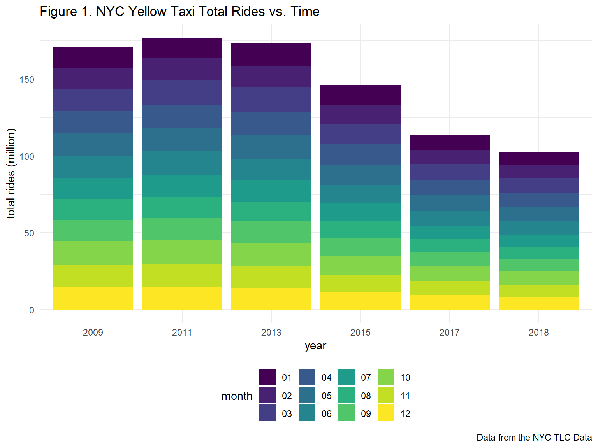
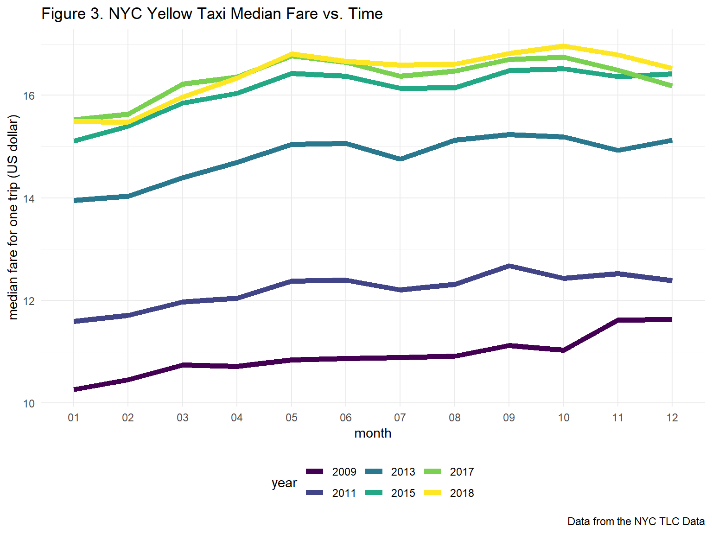

10-Year Overall Analysis of NYC Yellow Taxi Usage
Xun Wang
12/2/2019
1. Introduction
With the development of shared traveling methods such as Uber, Lyft, VIA etc., what will the demands for NYC yellow taxi change? Will we still need these cute yellow cabs in the future? In this section, we analyze the usage of NYC yellow taxi in the past 10 years, trying to shed light on the future of the yellow cab in NYC.
2. Data Import and Tidy
To analyze the overall change of NYC yellow taxi usage, we import and tidy yearly summary datasets from 2009 to 2018 in the folder data/yearly_summary. It combines information of rides, passenger numbers, fares in 2009, 2011, 2013, 2015, 2017, 2018 to form a overall_df.
3. 10-Year Overall Analysis
To study changes of NYC yellow taxi usage in the past ten years, we analyze total rides, total passenger numbers, total income and median income for one trip in 2009, 2011, 2013, 2015, 2017, 2018.
3.1 NYC yellow cab ride and passenger numbers are decreasing
First, we look at how the NYC yellow cab ride number (Fig. 1) and the passenger number (Fig. 2) change with time. From Figure 1, we can see that the total number of taxi rides starts to decrease since 2011 and has decreased by more than 40% in the past 10 years, and monthly ride numbers are decreasing comparing two adjacent years. Figure 2 shows how the total passenger numbers change with time. When comparing within a single year, one interesting result is that fewer people take yellow taxis during the summer (July, August and September) even more tourists are in NYC then. When comparing among different years, the total passenger number has been also decreasing since 2011, and has also decreased by more than 40% in the past 10 years.
Therefore, in the past 10 years, NYC yellow cab has had fewer and fewer usage and customers!!!


3.2 NYC yellow cab is more expensive for a single ride
Second, we look at how the price of taking a yellow cub changes with time and plot the relationship between media fare for a single trip and time time as Figure 3. From Figure 3, we can see that the median fare for a single trip is increasing within a year and among different years with time goes by. For a single trip, the median fare has increased by about 45%.
Therefore, in the past 10 years, NYC yellow cab has become more and more expensive!!!

3.3 NYC yellow cab gets lower income
At last, we look at how the gross income from the NYC yellow cab changes with time. We plot the relationship between total income and time as Figure 4. From Figure 4, we can see that the total income from the NYC yellow cab reaches to the peak in 2013. This might because the customer number didn’t decrease too much while the median fare for a single trip increased a lot in 2013 compared with 2012. However, the total income has decreased by about 30% (amost 1 billion dollars!) in the past 5 years.
Therefore, the total income from the NYC yellow cab has been decreasing since 2013.

4. Conclusion
From the analysis of overall data of the NYC yellow cab in the past 10 years, we know that with time goes by, fewer and fewer people are using the NYC yellow cab. Even though the fare for a single trip is increasing, the total income from these cute cabs is decreasing and almost 1 billion dollars vanished in 2018 compared with 2013. Therefore, the future of the NYC yellow cab is not very bright. Good luck!